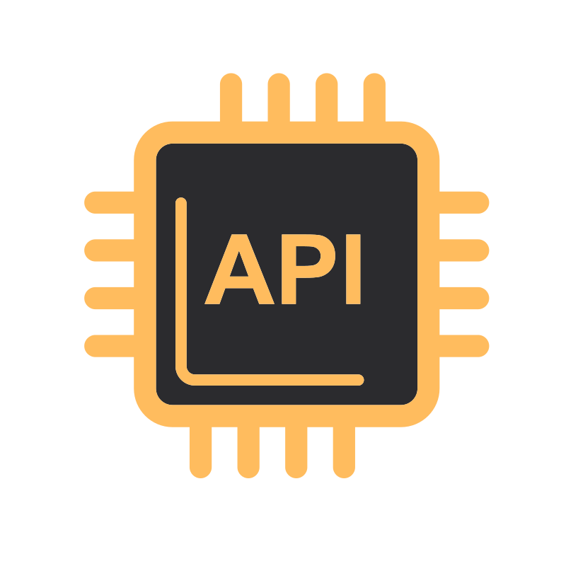
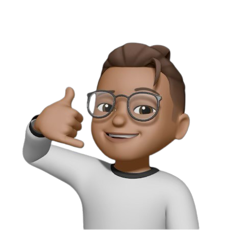

I am attentive and quick to learn, with a strong passion for technology and programming.
As a Computer Engineering student, I constantly seek to deepen my understanding of the field.
I enjoy tackling new challenges and applying my skills in innovative ways.
My curiosity extends beyond technology to subjects like mathematics, sports, all of which
enrich my perspective and drive my desire to grow both personally and professionally.
What i'm doing
Script Developer
Create efficient algorithms to solve an and automate tasks.
OOP
High-quality systems with Object Oriented Programming.
Operating Systems
Learning about, Operative Systems. System calls, Kernel, etc.

Requirements, Design, and Project Management
I'm learning about Software Engineering: Requirements, Design, and Project Management.
Testimonials

Carolina Manhusen
Manuel worked with us in our Madrid office as an intern during part of his summer break from university, from February 13th to March 17th, 2023. Manuel is a mature and thoughtful young man who has proven to be responsible and diligent, quick yet precise in his work, eager to learn, and has, in a short amount of time, become a valued, liked, and respected member of the team. No task was too small or repetitive for him to perform well and with pride, and no task was too challenging as he broke it down into manageable parts and worked it out.
As a person, I have seen Manuel quickly establish rapport with all team members. He has been easy to work with, curious, kind, hardworking, and honest. I recommend him without reservation.
Following are specific comments from various members of the team that Manuel worked with.
The team and I wish Manuel much success in his continued studies, and he knows he will always have a place here at Ocean Born.
If you have any questions, please do not hesitate to get in touch.
Kind regards,
Monica Zaldumbide
I have had the opportunity to witness firsthand the wonderful impact of having
Manuel on our team. He is always willing to help and learn, and most importantly,
he consistently delivers outstanding results in all the tasks he is assigned.
His attention to detail, commitment to meeting deadlines, and ability to
effectively handle all requests from the team, combined with his positive
attitude and impressive work quality, have been invaluable.
From the perspective of the Operations Department, Manuel has significantly
contributed to making our work more efficient and optimizing the performance of
our websites and platforms to better meet the needs of our customers.
Monica Zaldumbide (COO)
Melanie Mercer
Hemos trabajado codo a codo con Manuel en el Departamento de Comunicación Digital,
y debo decir que durante el tiempo que ha estado aquí, ha marcado una gran diferencia
en nuestro departamento.
Manuel llegó con una gran disposición para ayudar, aprender y dar lo mejor de sí. En
poco tiempo, logró aprender las herramientas que utilizamos y desenvolverse en todo
tipo de proyectos, desde aquellos relacionados con programación y diseño web hasta la
optimización de páginas, estrategias de SEO y reportes.
Ha sabido seguir las indicaciones perfectamente, así como mostrar un gran compromiso
al buscar y proponer soluciones y al gestionar el trabajo en equipo con otras áreas
de la organización. Esto le permitió sacar adelante trabajos atrasados y superar las
expectativas que teníamos sobre lo que podría lograr en el tiempo que tuvo.
Estoy más que segura de que Manuel tendrá un futuro brillante por delante, ya que no
solo posee grandes habilidades para desarrollarse profesionalmente, sino que también
es una excelente persona.
Desde luego, echaremos mucho de menos a Manuel y esperamos volver a cruzarnos pronto.
Melanie Mercer
(Digital Comms)
Mireia Valls
During the time worked with Manuel at Ocean Born, he proved to be able to take
responsibility for the tasks he developed. carrying them out in an organised and efficient way.
He became a key player in those projects in which he helped me. such as in the development
of a website.
Manuel is a proactive. Efficient and resolutive person, always willing to work in a team and
eager to learn and face new challenges.
Mireia Valls (Project Manager Ocean Born Lifestyle)
Languages
Resume
Education
Universidad de Buenos Aires
2022 — 2024 (Present)
Computer Engineering 3rd year (in process)
Carmen Arriola de Marin, Buenos Aires, Argentina
2009 — 2021
I graduated from high school with a focus on natural sciences.
Interational Exams:
IGCSE MATH
IGCSE ENGLISH
Experience
Python Script Developer
NB Engineering LLC2023 — Present
As a Python Scripting Specialist, I automate pre-production tasks,
streamline workflows for product teams, and optimize office
procedures through scripting. I update and maintain Python scripts,
manage documentation, and utilize various scripting languages like
GrassHopper, VB, and JS. Committed to continuous learning, I strive to
improve task execution efficiency.
Internship
Ocean Born Foundation, Madrid, Spain2021 — 2022
During my internship at Ocean Born Foundation, I had the opportunity
to develop strong skills in programming, web design, and page
optimization. Improving the website's positioning by 20%. I stood out
for my ability to quickly adapt to new tools and technologies.
Additionally, I demonstrated myself as a collaborative and effective
member in cross-departmental teams.
Web designer
2020 — 2021
I studied independently to become a web developer, dedicating time to learn
the latest technologies and tools in the field. Through online courses,
tutorials, and personal projects, I acquired the skills necessary to build
and maintain effective and attractive websites. My focus included learning
programming languages such as HTML, CSS, and JavaScript, as well as mastering
popular frameworks and libraries.